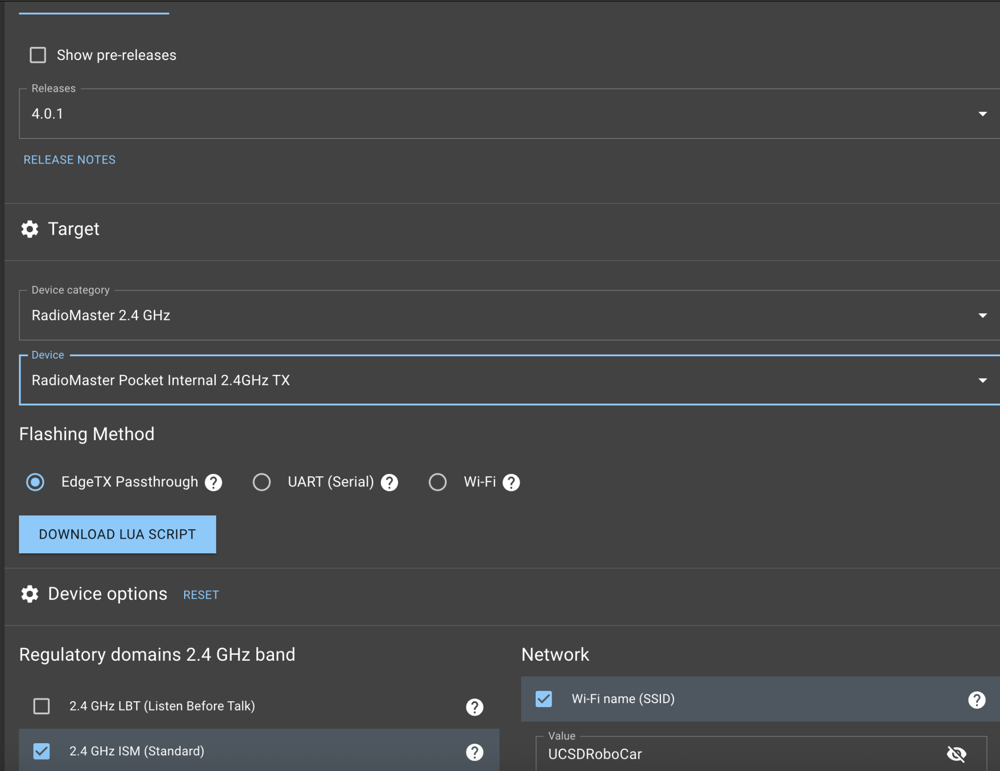
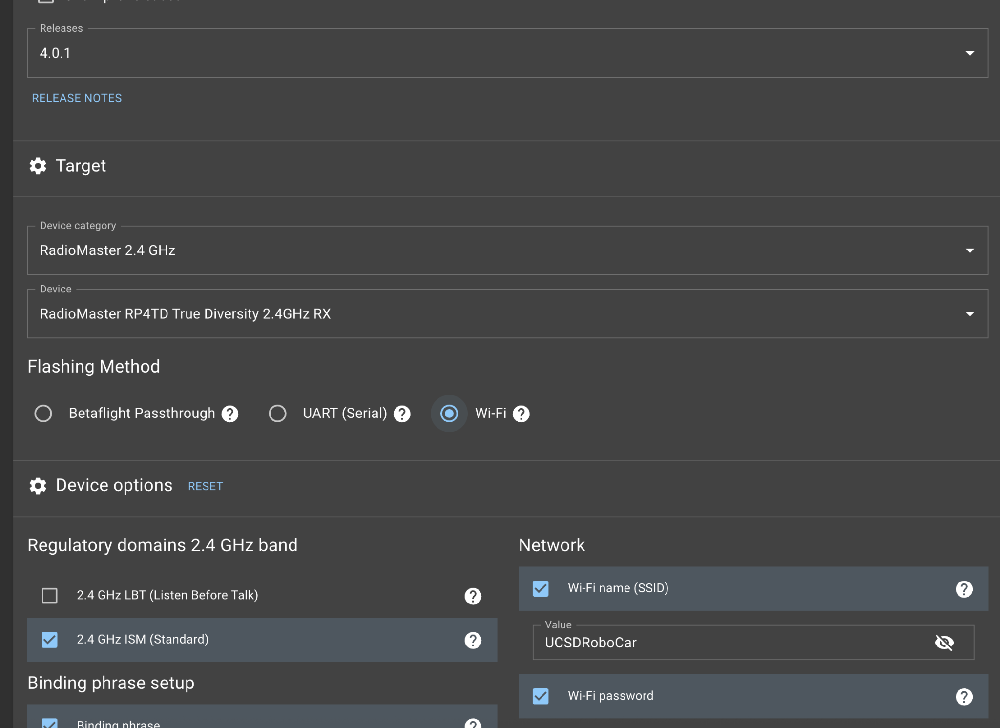

UCSD RoboCar · Radio link setup
Turn an ExpressLRS radio into a USB joystick for DonkeyCar.
A step-by-step guide to flash a RadioMaster ELRS transmitter & receiver, wire the receiver to an Arduino Leonardo, and have the whole rig show up as a plug-and-play game controller on your Raspberry Pi.
// signal flow — sticks in your hand to steering on the car
RadioMaster TX
Pocket internal 2.4 GHz 2.4 GHz ELRSRP4TD RX
True-diversity receiver serial @ 115200Arduino Leonardo
SBUS → HID firmware USB HIDRaspberry Pi
DonkeyCar /dev/input/js0 drives the carOverview What you're building
ExpressLRS gives you a rock-solid, low-latency 2.4 GHz link between a handheld transmitter and a tiny receiver on the vehicle. The catch: the receiver speaks a serial radio protocol, not USB — so a Raspberry Pi can't read it directly.
This project bridges that gap. An Arduino Leonardo reads the receiver's serial stream, smooths and decodes every stick, switch, and button, then re-presents all of it to the Pi as an ordinary USB game controller. DonkeyCar already knows how to read a joystick at /dev/input/js0, so once it's flashed you just plug in and drive.
You'll do five things, in order:
- Flash the transmitter with ELRS firmware and the
JEEPBOTbinding phrase. - Flash the receiver with the matching phrase and set its serial output.
- Wire the receiver to the Leonardo's hardware serial port.
- Build & upload the SBUS-to-joystick firmware with PlatformIO.
- Point DonkeyCar at the new controller with the included joystick part.
Hardware & parts Bill of materials
This guide is written for the exact RadioMaster combo used on JeepBot, but the firmware works with any ELRS receiver that can output a serial stream the Leonardo can read.
- Transmitter — RadioMaster Pocket with internal 2.4 GHz module, running EdgeTX
- Receiver — RadioMaster RP4TD True-Diversity 2.4 GHz
- Microcontroller — Arduino Leonardo (the USB-HID capability is required; an Uno will not work)
- Host — Raspberry Pi running DonkeyCar
- 3 jumper wires (signal / 5V / GND) and a USB cable for the Leonardo
Tools you'll install
- ExpressLRS Configurator — flashes both the TX and RX
- PlatformIO (VS Code extension) — builds and uploads the Leonardo firmware
Flash the transmitter ExpressLRS Configurator → TX
Open the ExpressLRS Configurator and select the release and target shown below. The binding phrase is what pairs the TX and RX — it must be identical on both.
- Release
4.0.1 - Device categoryRadioMaster 2.4 GHz
- DeviceRadioMaster Pocket Internal 2.4 GHz TX
- Flashing methodEdgeTX Passthrough
- Binding phrase
JEEPBOT - Regulatory domain2.4 GHz ISM (Standard)
- Wi-Fi SSID
UCSDRoboCar - Wi-Fi password
UCSDrobocars2018
Steps
- Set the fields above. Leave 2.4 GHz ISM (Standard) checked under regulatory domains.
- Click Build. The Configurator produces a firmware file — note where it saves.
- Copy that file onto the SD card of the transmitter.
- On the radio, run the EdgeTX flashing tool (or the downloaded Lua script) to flash from the SD card.
/dev/tty.usbmodem0000000000001B1 — yours will differ. Plug the radio in, check which port appears, and select it manually.
Flash the receiver ExpressLRS Configurator → RX (Wi-Fi)
The receiver is flashed over Wi-Fi. You build the firmware file first, then connect to the receiver's own access point and upload it.
- Release
4.0.1 - Device categoryRadioMaster 2.4 GHz
- DeviceRadioMaster RP4TD True Diversity 2.4 GHz RX
- Flashing methodWi-Fi
- Binding phrase
JEEPBOT(same as TX)
Steps
- Set the fields above and click Build — save the file to disk (don't try to flash directly yet).
- Power the receiver and let it boot into Wi-Fi mode, then connect your computer to its access point: SSID
ExpressLRS RX, passwordexpresslrs. - Open the receiver's web page, upload the saved firmware file, and flash.
- In the receiver's settings, set the serial protocol and baud rate 115200, then restart the receiver.
115200 baud. Whatever serial protocol and baud you set on the receiver has to match that, or the Leonardo will see garbage. If you change the firmware's baud, change it here too.
Wire RX → Leonardo Three wires
The firmware reads the receiver on the Leonardo's hardware serial port (Serial1), which is pin 0 (RX). That keeps the USB serial free for the joystick. Connect the receiver's serial output pad to pin 0, and share power and ground.
| Receiver | Arduino Leonardo | Notes |
|---|---|---|
| Serial out (TX pad) | Pin 0 — RX1 / Serial1 | The signal line the firmware listens on |
| 5V / VCC | 5V | Powers the receiver from the Leonardo |
| GND | GND | Common ground — required |
Then connect the Leonardo to the Raspberry Pi over USB. That single cable both powers the Leonardo and carries the joystick data to the Pi.
pin 8 HIGH whenever a trigger button is held — handy for an indicator LED or to switch an external circuit. Leave it unconnected if you don't need it.Build & upload firmware PlatformIO
The firmware and all three libraries it needs (Joystick, FUTABA_SBUS, Streaming) are vendored in this repo's lib/ folder, so there's nothing extra to install. Open the project in VS Code with the PlatformIO extension, or use the CLI:
# clone the repo and enter it
git clone https://github.com/<your-username>/JeepBot-ELRS-Controller.git
cd JeepBot-ELRS-Controller
# build for the Leonardo, then upload (board plugged in over USB)
pio run
pio run --target uploadThe target board is already set in platformio.ini:
[env:leonardo]
platform = atmelavr
board = leonardo
framework = arduino
; build_flags = -DDEBUG_LOGDebug logging (optional)
By default the firmware emits no serial output, because Serial and USB-HID can fight on this board. If you need to watch raw channel values while testing, uncomment the build flag — then comment it back out for normal use.
[env:leonardo]
; ...
build_flags = -DDEBUG_LOG-DDEBUG_LOG enabled in normal operation. On the Leonardo the debug Serial can conflict with the USB joystick interface — enable it only while actively debugging.How the firmware reads the sticks
Every channel is run through a small filter stack before it becomes a joystick value: a 9-sample rolling average, an exponential moving average, and a median-of-3 prefilter. Switches and buttons add enter/exit hysteresis plus a 3-reading debounce, so a switch resting near a threshold won't flicker. You don't need to touch any of this — it's tuned — but it's why the controls feel steady rather than jittery.
DonkeyCar integration my_joystick.py
Once the Leonardo is flashed it appears as a standard joystick on the Pi. The repo includes donkeycar_joystick/my_joystick.py, which maps that controller's axes and buttons onto DonkeyCar actions.
- Copy
my_joystick.pyinto your DonkeyCar project (next tomanage.pyis fine). - Confirm the controller is present on the Pi:
# the Leonardo should show up here once plugged in
ls /dev/input/js*
# → /dev/input/js0- Point DonkeyCar at the custom controller. In
myconfig.pyuse the joystick controller and loadMyJoystickControllerfrom the file you copied. Then launch as usual withpython manage.py drive.
What the buttons do
The switch/button mapping defined in my_joystick.py:
| Control | DonkeyCar action |
|---|---|
| SE_2 | Toggle drive mode (manual / local / pilot) |
| SE_3 | Erase last N records |
| SE_4 | Toggle manual recording |
| SE_6 | Toggle constant throttle |
| SE_8 | Emergency stop |
| Rudder axis | Steering |
| Elevator axis | Throttle (inverted) |
Channel map SBUS channel → joystick output
Reference for how the firmware assigns each incoming channel. SBUS indices are 0-based, matching sBus.channels[N] in main.cpp. If your transmitter's channel order differs, this is the table to edit.
| SBUS index | Source on radio | Joystick output |
|---|---|---|
| 0 | Right stick — horizontal | Rx axis |
| 1 | Right stick — vertical | Ry axis |
| 2 | Left stick — vertical | Y axis |
| 3 | Left stick — horizontal | X axis |
| 4 | Left button | Button 0 |
| 5 | Left 3-position switch | Throttle axis + mode select |
| 6 | Right 3-position switch | Rudder axis + mode select |
| 7 | Right button | Button 1 |
| 8 | SE button | Buttons 2–10 (by switch combo) |
Troubleshooting When it doesn't just work
The car won't bind / no link
The binding phrase must be byte-identical on TX and RX — it's case-sensitive. Re-flash whichever side is wrong with JEEPBOT. Both must also be on the same release (4.0.1) and the same regulatory domain (2.4 GHz ISM).
No /dev/input/js0 on the Pi
That device only appears if the Leonardo is enumerating as a USB joystick. Confirm the firmware uploaded successfully, the USB cable is data-capable (not charge-only), and that -DDEBUG_LOG is not enabled — debug Serial can suppress the HID interface on this board.
Sticks read garbage or stay centered
Almost always a serial mismatch. Check three things: the receiver's serial pad goes to Leonardo pin 0 (Serial1), GND is shared, and the receiver's serial baud is 115200 to match the firmware.
A switch flickers between positions
It shouldn't — the firmware debounces with hysteresis. If it does, your transmitter's channel endpoints may be off; make sure the switch travels the full range in the radio's mixer so it clears the enter/exit thresholds.
I want to see raw values
Temporarily enable build_flags = -DDEBUG_LOG in platformio.ini, re-upload, and open a serial monitor at 115200. Remember to disable it afterward.